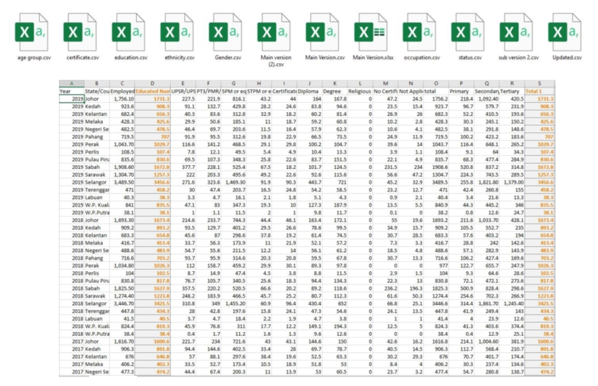
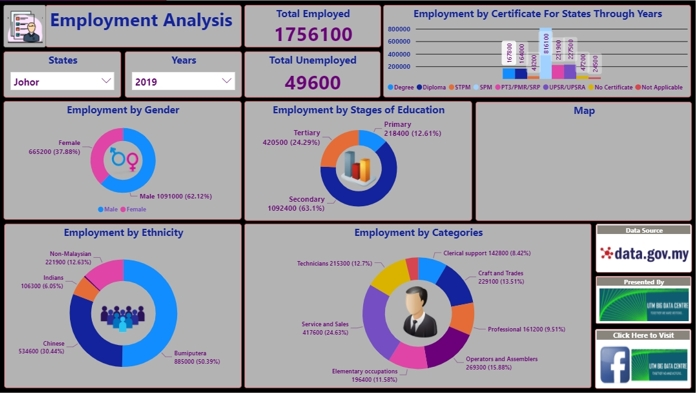

Work Experience
This page show cases the 5 months of working as Data Analyst at UTM Big Data Centre and the projects that I completed.
Task
- Analayze the last 10 years of education and employment data and visualize with meaningful story
Following Data Analysis Steps
| Step | Implementation |
|---|---|
| Ask | From the assigned supervisor, understand the project and ask meaningful question to find the exact goal |
| Prepare | From several open source and third party data source several datasets was collected |
| Process | Total eleven data sets were processed into one meaningful dataset through spreadsheet functions and formulas |
| Analyze | The one main spreadsheet is being checked and presented before proceeding with the rest, the data is analyzed to make comparison and show impact on the given criteria |
| Share | Using visualization tool like Power BI to share the data |
| Act | The main goal was to show the impact of education on employment and the dahsboard showcases it perfectly |
Spreadsheet & Business Inteligence Tool

- Collect data related to employment focusing variables like gender, educational attainment, state, year, educational stages (primary, secondary, tertiary) and ethnicity.
- The main variable was employment, on which the other types of data were stored and placed into different columns.
- The number of data is summed up to check if the sum of each column co relates to other column. If the sum of columns was matched, the numbers have been considered as accurate
- The number of data is summed up to check if the sum of each column co relates to other column. If the sum of columns was matched, the numbers have been considered as accurate

- In the visualization, the first thing was to import the data chart or the .CSV file into the software. Later, the query selector for any advanced relationship among the tables.
- Later all the tables will show at the left of the with small icon to be dragged
- Later visualizations like pie chart, bar chart, scatter plots etc. to be selected and plot the data onto it.
- Later the dashboard was shared on the official website of UTM Big Data Centre